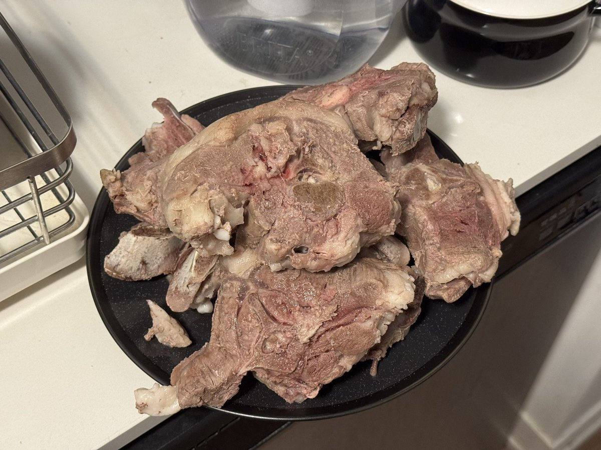
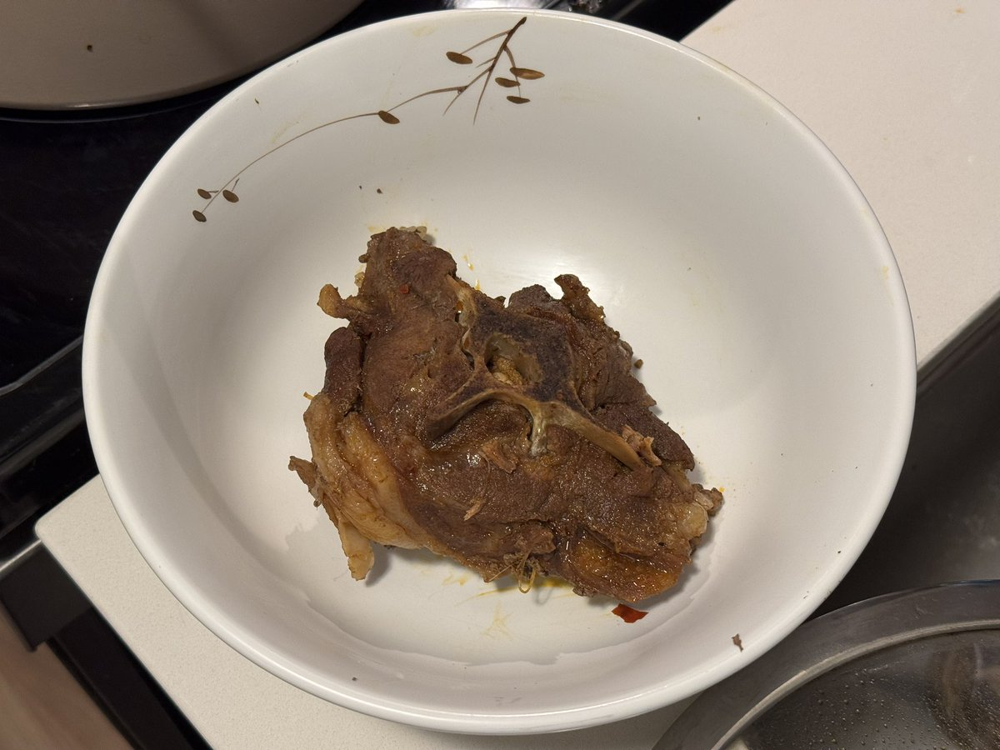

热腾腾的红汤一降温变成了冰冷的固态黏腻难洗的牛油。
做饭一时爽，洗碗洗锅火葬场，尤其是我还忘了它是牛油直接就往水池里倒剩的红汤，倒完拿常温水刚要开始洗，肉眼可见地瞬间全凝固了。幸好水龙头能出烫水而且是那种能拔出来花洒的，疯狂四处加温熔化补救了一下，不然池壁池底的油我怎么清理完啊。

做饭一时爽，洗碗洗锅火葬场，尤其是我还忘了它是牛油直接就往水池里倒剩的红汤，倒完拿常温水刚要开始洗，肉眼可见地瞬间全凝固了。幸好水龙头能出烫水而且是那种能拔出来花洒的，疯狂四处加温熔化补救了一下，不然池壁池底的油我怎么清理完啊。


冰冷的火锅底料和冷冻羊蝎子变成了热腾腾的红汤羊蝎子。
“您理解了吗？冰冷和热腾腾互为反面，令人忍俊不禁、食欲大开、垂涎欲滴、饥肠辘辘、大快朵颐、津津有味、风卷残云、狼吞虎咽、回味无穷……”
“我要吃饭了，「闭嘴」，谢谢。”
“好的。已为您贴心打开您最爱看的下饭UP主的最新一期视频。” https://t.co/L4tHQwsR0w
“您理解了吗？冰冷和热腾腾互为反面，令人忍俊不禁、食欲大开、垂涎欲滴、饥肠辘辘、大快朵颐、津津有味、风卷残云、狼吞虎咽、回味无穷……”
“我要吃饭了，「闭嘴」，谢谢。”
“好的。已为您贴心打开您最爱看的下饭UP主的最新一期视频。” https://t.co/L4tHQwsR0w